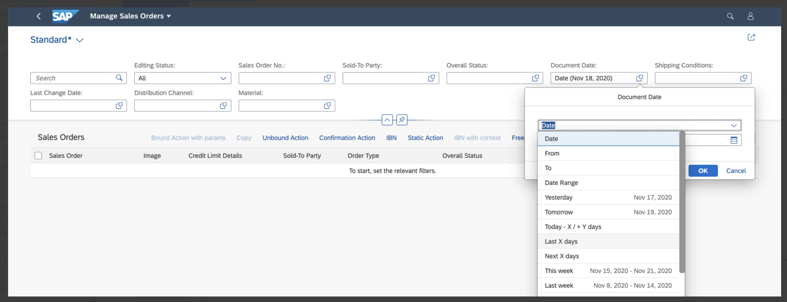

Enabling Semantic Operators in the Filter Bar
Semantic operators are enabled by default for the following fields:
-
Edm.Date-based fields for whichFilterRestrictions.AllowedExpressionsis set toSingleRangeorSingleValue. -
Edm.DateTimeOffset-based fields for whichFilterRestrictions.AllowedExpressionsis set toSingleRange.
You can set the FilterRestrictions to SingleRange as shown in the following sample code:
XML Annotation
<edmx:Reference Uri="https://oasis-tcs.github.io/odata-vocabularies/vocabularies/Org.OData.Capabilities.V1.xml">
<edmx:Include Namespace="Org.OData.Capabilities.V1" Alias="Capabilities" />
</edmx:Reference>
<Annotations Target="com.c_salesordermanage_sd.EntityContainer/SalesOrderManage">
<Annotation Term="Capabilities.FilterRestrictions">
<Record Type="Capabilities.FilterRestrictionsType">
<PropertyValue Property="FilterExpressionRestrictions">
<Collection>
<Record Type="Capabilities.FilterExpressionRestrictionType">
<PropertyValueProperty="Property"PropertyPath="myDate"/>
<PropertyValueProperty="AllowedExpressions"String="SingleRange"/>
</Record>
…
…
</Collection>
</PropertyValue>
</Record>
</Annotation>
…
…
</Annotations>
ABAP CDS Annotation
No ABAP CDS annotation sample is available. Please use the local XML annotation.
CAP CDS Annotation
@Capabilities : {
FilterRestrictions : {
FilterExpressionRestrictions :
[{
Property : 'myDate',
AllowedExpressions : 'SingleRange'
}]
}
}
...
entity MyEntity {
...
myDate: Date;
}Setting a Default Value for a Semantic Date Field
Extend the manifest for the filter field as follows to set a default value for a semantic date:
Default value for semantic date field
"settings" : {
"contextPath" : "/SalesOrderManage",
"controlConfiguration" : {
"@com.sap.vocabularies.UI.v1.SelectionFields" : {
…
…
"filterFields": {
"SalesOrderDate": {
"settings": {
"defaultValues": [{"operator": "YESTERDAY"}]
}
}
}
…
…
}
}
}
The value set to operator is set as the default operator for the semantic date field. In this case, the default
value is
"YESTERDAY".
Here's a list of fully supported operators:
-
Single date-based operators
-
"YESTERDAY" -
"TOMORROW" -
"TODAY" -
"FIRSTDAYWEEK" -
"LASTDAYWEEK" -
"FIRSTDAYMONTH" -
"LASTDAYMONTH" -
"FIRSTDAYQUARTER" -
"LASTDAYQUARTER" -
"FIRSTDAYYEAR" -
"LASTDAYYEAR"
-
-
Date range-based operators
-
"THISWEEK" -
"LASTWEEK" -
"NEXTWEEK" -
"THISMONTH" -
"LASTMONTH" -
"NEXTMONTH" -
"THISQUARTER" -
"LASTQUARTER" -
"NEXTQUARTER" -
"QUARTER1" -
"QUARTER2" -
"QUARTER3" -
"QUARTER4" -
"THISYEAR" -
"LASTYEAR" -
"NEXTYEAR" -
"YEARTODATE" -
"DATETOYEAR"
-
-
Default values coming from the
SelectionVariantfor the semantic date fields are ignored – only the manifest-based default values are considered. -
When using the default operators, check what the operator you're using evaluates to on the UI to ensure it matches your use case.
The standard fiscal quarter
"QUARTER1"evaluates to the period between January and March. If you're using non-standard fiscal quarters, the default value won't be suitable for you.
Defining Default Values for Operators That Require Parameters
If applications want to provide a default value for the semantic date field that requires an operator that needs a parameter value (for example, an application developer wants to set NEXT "X" DAYS as the default operator and a default value for "X"), the manifest must be configured accordingly. The following table provides the manifest settings for the various operators that need a parameter value:
| Operator | manifest.json Sample |
Comment |
|---|---|---|
| DATE |
"@com.sap.vocabularies.UI.v1.SelectionFields": {
"filterFields": {
"SalesOrderDate": {
"settings": {
"defaultValues" : [ {"operator": "DATE", "values": ["2018-12-28"]}] }
}
}
} |
Required date format: YYYY-MM-DD |
| FROM |
"@com.sap.vocabularies.UI.v1.SelectionFields": {
"filterFields": {
"SalesOrderDate": {
"settings": {
"defaultValues" : [ {"operator": "FROM", "values": ["2018-11-28"]}]
}
}
}
} |
Required date format: YYYY-MM-DD |
| TO |
"@com.sap.vocabularies.UI.v1.SelectionFields": {
"filterFields": {
"SalesOrderDate": {
"settings": {
"defaultValues" : [ {"operator": "TO", "values": ["2019-11-02"]}]
}
}
}
} |
Required date format: YYYY-MM-DD |
| DATERANGE |
"@com.sap.vocabularies.UI.v1.SelectionFields": {
"filterFields": {
"SalesOrderDate": {
"settings": {
"defaultValues" : [ {"operator": "DATERANGE", "values": ["2019-11-02","2022-01-01"]}]
}
}
}
} |
Required date format: YYYY-MM-DD |
| TODAYFROMTO |
"@com.sap.vocabularies.UI.v1.SelectionFields": {
"filterFields": {
"SalesOrderDate": {
"settings": {
"defaultValues" : [ {"operator": "TODAYFROMTO", "values":[5,6]}]
}
}
}
} |
First value: days before TODAY Second value: Number of days after TODAY |
| LastXDays / LastXWeeks / LastXMonths / LastXQuarters / LastXYears |
"@com.sap.vocabularies.UI.v1.SelectionFields": {
"filterFields": {
"SalesOrderDate": {
"settings": {
"defaultValues" : [ {"operator": "LASTDAYS", "values":[6]}]
}
}
}
} |
|
| NextXDays / NextXWeeks / NextXMonths / NextXQuarters / NextXYears |
"@com.sap.vocabularies.UI.v1.SelectionFields": {
"filterFields": {
"SalesOrderDate": {
"settings": {
"defaultValues" : [ {"operator": "NEXTDAYS", "values":[6]}]
}
}
}
} |
|
| SpecificMonth |
"@com.sap.vocabularies.UI.v1.SelectionFields": {
"filterFields": {
"SalesOrderDate": {
"settings": {
"defaultValues" : [ {"operator": "SPECIFICMONTH", "values":[1]}]
}
}
}
} |
The numeric assignment is zero (for example, January is 0) |
If the semantic filter field is from a navigation entity set, you must specify the filter field name in the
"<navigationProperty>::<filterField>" format. In the following example, the
"SalesOrderDate" comes from a navigation entity set where "_Item" is the name of the
associated navigation property:
Semantic filter field from navigation entity set
"@com.sap.vocabularies.UI.v1.SelectionFields": {
"filterFields": {
"_Item::SalesOrderDate": {
"settings": {
"defaultValues" : [ {"operator": "SPECIFICMONTH", "values":[1]}]
}
}
}
}
You can't define default values as described in this section for Edm.DateTime-based fields.
Excluding Certain Date Range Types
You can use the operatorConfiguration settings to include and exclude specific date range values. Applications can
use this setting for more complex and detailed configuration.
-
Example 1
To remove
"TODAY"from the date range, proceed as shown in the following sample code:"filterFields": { "SalesOrderDate": { "settings": { "operatorConfiguration": [ { "path": "key", "equals": "TODAY", "exclude": true } // TODAY filter will be removed ] } } }You can see the result in the following screenshot:
 -
Example 2
To include
"TODAY"and exclude "Today -X/+Y Days", proceed as shown in the following sample code:"filterFields": { "SalesOrderDate": { "settings": { "operatorConfiguration": [ { "path": "key", "equals": "TODAY", "exclude": false }, { "path": "key", "equals": "TODAYXYDAYS", "exclude": true } ] } } }You can see the result in the following screenshot:

You can find all supported operators for the
"exclude"configuration in the following list:-
"DATE" -
"FROM" -
"TO" -
"DATERANGE" -
"TODAY" -
"YESTERDAY" -
"TOMORROW" -
"TODAYFROMTO" -
"LASTDAYS" -
"NEXTDAYS" -
"THISWEEK" -
"LASTWEEK" -
"LASTWEEKS" -
"NEXTWEEK" -
"NEXTWEEKS" -
"SPECIFICMONTH" -
"THISMONTH" -
"LASTMONTH" -
"LASTMONTHS" -
"NEXTMONTH" -
"NEXTMONTHS" -
"THISQUARTER" -
"LASTQUARTER" -
"LASTQUARTERS" -
"NEXTQUARTER" -
"NEXTQUARTERS" -
"QUARTER1" -
"QUARTER2" -
"QUARTER3" -
"QUARTER4" -
"THISYEAR" -
"LASTYEAR" -
"LASTYEARS" -
"NEXTYEAR" -
"NEXTYEARS" -
"YEARTODATE" -
"DATETOYEAR"
-
Excluding specific semantic operators is only allowed for
SingleRange-based Date fields. -
When you exclude an operator for a filter field that's based on a semantic date and comes from a navigation entity set, ensure that you specify the
filterFieldusing the following format:"<navigationProperty>::<propertyName>"
If
"_Items"is the navigation property and"DispatchDate"is the property, then thefilterFieldfor which"settings"is defined will be"_Items::DispatchDate".
-
Enabling Additional Date Range Operators
You can now use additional date range operators for single range-based fields of type Edm.Date or
Edm.DateTimeOffset. Using these operators, you can combine the single value date operators, such as
TODAY or TOMORROW, with the FROM or TO
operations.
The following additional operators are available:
-
"FROMTODAY"
-
"FROMTOMORROW"
-
"FROMYESTERDAY"
-
"FROMFIRSTDAYWEEK"
-
"FROMLASTDAYWEEK"
-
"FROMFIRSTDAYMONTH"
-
"FROMLASTDAYMONTH"
-
"FROMFIRSTDAYQUARTER"
-
"FROMLASTDAYQUARTER"
-
"FROMFIRSTDAYYEAR"
-
"FROMLASTDAYYEAR"
-
"TOTODAY"
-
"TOTOMORROW"
-
"TOYESTERDAY"
-
"TOFIRSTDAYWEEK"
-
"TOLASTDAYWEEK"
-
"TOFIRSTDAYMONTH"
-
"TOLASTDAYMONTH"
-
"TOFIRSTDAYQUARTER"
-
"TOLASTDAYQUARTER"
-
"TOFIRSTDAYYEAR"
-
"TOLASTDAYYEAR"
These additional semantic date operators are not available by default. To enable them, you can extend the manifest configuration as shown in the following sample code:
"targets": {
"SalesOrderManageList": {
"options": {
"settings": {
"controlConfiguration": {
"@com.sap.vocabularies.UI.v1.SelectionFields": {
"filterFields": {
"SalesOrderDate": {
"settings": {
"operatorConfiguration": [
{
"path": "key",
"equals": "FROMTODAY",
"exclude": false // By default, "exclude" is set to true for all these additional date range operators and have to be explicitly set to false in case the operator needs to be enabled
},
{
"path": "key",
"equals": "TOYESTERDAY",
"exclude": false
}]
}
},
…….
…….
}You can also use these additional semantic date range operators as default values for the filter fields.
These operators are not available when using the Filter Bar building block. They are also not available as
filters in the table or chart within the object page.
More Information
For more information about configuring filter bars in a list report, see Adapting the Filter Bar.
Depending on the use of the date range filter, the default tile type also varies. For more information about creating tiles for the semantic date range configuration, see Extending the Bookmark Function to Save Static Tiles to the SAP Fiori Launchpad.